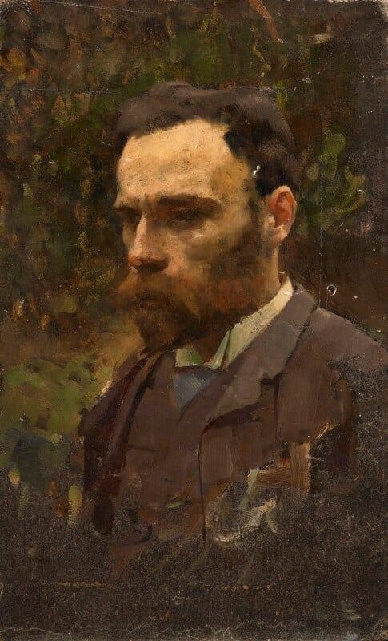
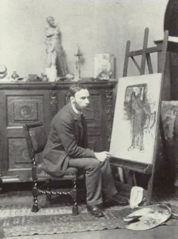
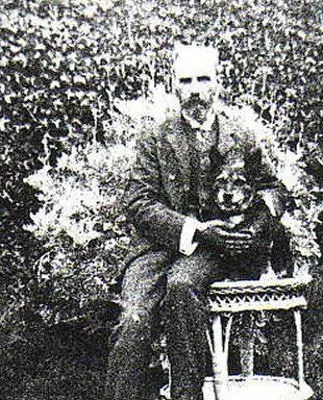

Op deze website laat ik zien welk onderzoek ik heb gedaan naar de kunstenaar John William Waterhouse, op basis daarvan heb ik een eigen meesterproef gemaakt.
Ik heb Waterhouse gekozen, omdat zijn schilderwerken esthetisch heel mooi vind om naar te kijken, ook de verschillende technieken die hij gebruikt om zijn schilderijen zo plechtig over te laten komen maakt deze kunstenaar echt een meester van zijn vak. Verder ben ik erg geïnteresseerd in De Prerafaëlieten Broederschap en hun denkwijze.

Portret van John William Waterhouse, William Logsdail, olieverf op paneel, circa 1887
Biografie
John William Waterhouse (06/04/1849 - 10/02/1917) was een kunstenaar die bekend stond om zijn klassieke, historische en poëtische onderwerpen. Hij werd geboren op 6 april 1849 in Rome, waar zijn vader een baan had als schilder. Hij werd gedurende zijn leven ‘Nino’ genoemd als bijnaam. Na Waterhouse zijn geboorte keerde het gezin snel terug naar Engeland. Waterhouse is in het begin van zijn leven assistent geweest in zijn vaders atelier, voordat hij werd aangenomen aan de Royal Academy of Art in 1870.
Zijn vroege werken zijn gemaakt in neoclassicistische stijl, met inspiratie van de kunstenaars Lawrence Alma-Tadema en Frederic Leighton. Zijn werk was in die tijd erg populair en werd tentoongesteld in verschillende exposities.

Waterhouse zittend bij een ezel, fotograaf Ralph W. Robinson
Primrose Hill
In 1883 trouwde Waterhouse met Esther Kenworthy, een mede-kunstenares (1857–1944). Ze verhuizen na hun huwelijk samen naar de Primrose Hill Studios, een ateliercomplex met veel andere kunstenaars. In datzelfde jaar werd Waterhouse verkozen tot lid van het Royal Institute of Painters in Watercolour, desondanks hij voornamelijk met olieverf schilderde.
In 1884 werd zijn schilderij ‘Consulting the Oracle, 1884', goed ontvangen bij de Royal Academy. Het werk werd gekocht door Henry Tate, die later ook ‘The Lady of Shalott' (afbeelding bovenaan de pagina) kocht. Hierin zie je zijn groeiende interesse voor de prerafaëlitische thema’s goed terugkomen, vooral het plein-air schilderen en femmes fatales.
Consulting the Oracle, oil painting, John William Waterhouse, 1884.
St John’s Wood
In 1900 was er een fonds genaamd het Artists’ War Fund, om Britse militairen te steunen tijdens de Tweede Boerenoorlog tussen het Britse Rijk en de Boeren van de Zuid-Afrikaanse Republiek. Waterhouse was hiervoor de belangrijkste initiatiefnemer en maakte het schilderij Destiny, dat werd geschonken aan het fonds, zodat ze geveild konden worden. In 1901 verhuisde hij naar St John’s Wood en sloot hij zich aan bij de St John’s Wood Arts Club, waar ook de leden Alma-Tadema en George Clausen bij zaten.
Waterhouse werd in zijn laatste jaren steeds zwakker, maar bleef schilderen tot zijn dood in 1917 door kanker. Een van zijn laatste werken, The Enchanted Garden(1916-17), is nooit afgemaakt en is op zijn ezel blijven staan. Deze is nu in de Lady Lever Art Gallery in Liverpool te vinden.
Destiny, oil painting, John William Waterhouse, 1900
Privéleven
Waterhouse zijn privéleven blijft voor een groot deel een raadsel, er zijn namelijk maar een paar brieven bewaard gebleven. In één brief staat dat Mary Lloyd voor waterhouse heeft geposeerd als model, dit is dezelfde vrouw die model heeft gestaan voor de Flaming June van Leighton. Ook een bekend mannelijk model, Angelo Colarossi, heeft naast Leighton, Millais, Sargent, Watts, Burne-Jones en vele andere Victoriaanse kunstenaars ook voor Waterhouse model gestaan.
Waterhouse en zijn Vrouw Esther hadden alleen een hond en geen kinderen. Esther is 27 jaar na haar man overleden in 1944. Ze delen nu een graf op Kensal Green Cemetery in Noord-Londen.

Waterhouse samen met zijn hond in de tuin, fotograaf onbekend.